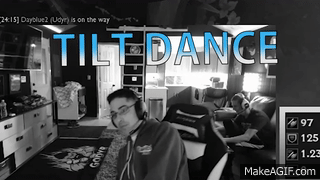
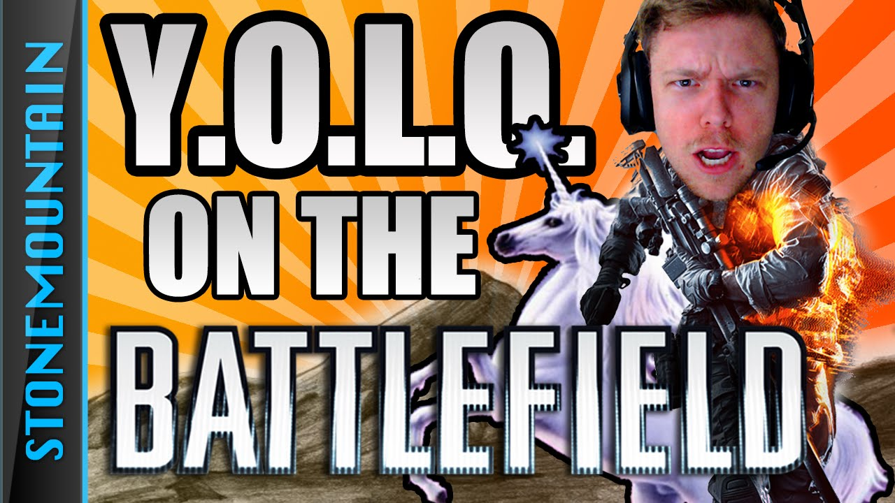

AdmiralBulldog
Also known as Henrik Ahnberg in Human Terms
Was a Dota 2 pro player and a Successful T.I. back at The International 3 who is now working as a streamer.
 BullDong Stream
BullDong Stream
I do have a lot of videos I watch from day to day and Streams/Streamers i watch. I will just mention some.
Was a Dota 2 pro player and a Successful T.I. back at The International 3 who is now working as a streamer.
BullDong Stream
D Gates. Is what i know him for. Trick works also works as a streamer for a couple of years now. He used to be one of "Rages" I've seen but after he undergo Anger Management, man he's so fun to watch.
He Still Rages though :D
 El TrucoI've never actually known StoneMountain nor heard of the him before but after I watch some of his videos on youtube specially his series YOLO on the battlefield. My side hurts from laughter from this dude.
 D Commanding Officer